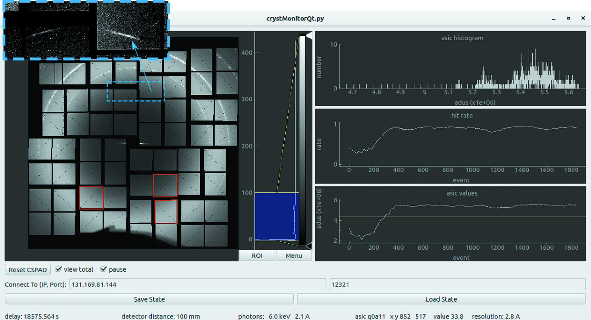

Use short and powerful x-ray pulses to outrun radiation damage and image small biomolecules
Until recently, humankind has been unable to explore the atomic structure and dynamics of small biomolecules such as proteins and viruses in their native state. Thus we have been blind to many important processes that these molecules undergo, such as photosynthesis or how a virus capsid molecule (such as SARS‑CoV‑2) invades a human host cell. The problem is that biomolecules are damaged by the high energy radiation used to image them; and the greater the magnification, the more light is needed.
X-ray free-electron lasers provide powerful and extremely short pulses of high energy light, that can scatter through a biomolecule in less than 50 femto-seconds. The high energy of the photons in these x-ray pulses allows one to probe a biomolecule's atomic structure and, more importantly, they are so short that they can scatter through the sample and form an image, before the radiation damage has time to deteriorate the sample's atomic structure.
I participate in experiment design and execution, in addition to developing; novel techniques for analysing diffraction data to produce 3D-models of a sample's structure (phasing), real-time data analysis to assist with experiment execution and help with the design and characterisation of new x-ray optics to increase signal-to-noise.
References
1. Zhuang, Awel, et al. "Unsupervised learning approaches to characterizing heterogeneous samples using X-ray single-particle imaging" IUCrJ (2022)
2. Ayyer, Xavier, et al. "3D diffractive imaging of nanoparticle ensembles using an x-ray laser" Optica (2021)
3. Li, Nazari, et al. "Diffraction data from aerosolized Coliphage PR772 virus particles imaged with the Linac Coherent Light Source" Scientific data (2020)
4. Ayyer, Morgan, et al. "Low-signal limit of X-ray single particle diffractive imaging" Optics express (2019)
5. Rose, Bobkov, et al. "Single-particle imaging without symmetry constraints at an X-ray free-electron laser" IUCrJ (2018)
6. Lundholm, Sellberg, et al. "Considerations for three-dimensional image reconstruction from experimental data in coherent diffractive imaging" IUCrJ (2018)
Novel lens design allows for nanoscale focusing with high energy light
Wether one is looking at the stars, at microscopic specimens or shooting a film, the quality of modern images using optical light are limited, in the main, only by the size, shape and focal length of the lenses employed. In fact, the construction of these lenses is so refined and well understood, that optical light rays can be bent and recombined to form an image for which the sharpness and brightness is limited only by the fundamental properties of the light itself, such as the number and wavelength of the photons incident on the lens.
But lenses designed to focus x-ray wavelengths of light are far from ideal. The penetrating power that makes x-rays useful for imaging also makes focusing them technologically challenging. For high-energy x-rays the refractive index of suitable lens materials differs from unity by approximately 10-5, which means that a large number of refractive surfaces are required to deflect or focus a beam.
I work with a collaborative research team, led by Sasa Bajt and Henry Chapman, to design and characterise a new breed of x-ray lenses, called wedged multilayer Laue lenses, that can collect and focus x-rays with a greater fidelity than has previously been possible.
References
1. Prasciolu, Murray, et al. "On the use of multilayer Laue lenses with X-ray Free Electron Lasers" arXiv (2022)
2. Morgan, Murray, et al. "Ptychographic X-ray speckle tracking with multi-layer Laue lens systems" Journal of applied crystallography (2020)
3. Murray, Pedersen, et al. "Multilayer Laue lenses at high X-ray energies: performance and applications" Optics express (2019)
4. Bajt, Prasciolu, et al. "X-ray focusing with efficient high-NA multilayer Laue lenses" Light: Science & Applications (2018)
5. Morgan, Prasciolu, et al. "High numerical aperture multilayer Laue lenses" Scientific reports (2015)
Track geometric features in x-ray holograms for wavefront metrology
X-ray speckle-tracking can be used to determine the intensity and direction of x-rays passing through a sample. For this method, projection images (or ``shadows'') of a sample are recorded as the sample is translated across the x-ray wavefield. Features in these images are distorted, e.g. stretched or translated, by the curving wavefront of the x-rays. We can then characterise the wavefront, by mapping these distortions using the recorded images. This is helpful for imaging experiments and in assessing the performance of x-ray lenses.
References
1. Morgan, Quiney, et al. "Ptychographic X-ray speckle tracking" Journal of applied crystallography (2020)
2. Morgan, Murray, et al. "Ptychographic X-ray speckle tracking with multi-layer Laue lens systems" Journal of applied crystallography (2020)
3. Morgan, Murray, et al. "speckle-tracking: a software suite for ptychographic X-ray speckle tracking" Journal of applied crystallography (2020)
Process terabytes of data every second for real-time decision making in high throughput experiments
 I am co-founder, along with Valerio Mariani and Chun Hong Yoon, of a free and open-source data analysis utility designed for fast online feedback during serial x-ray diffraction and scattering experiments: OnDA (online data analysis). OnDA contains real-time monitors for common types of serial x-ray imaging experiments and are capable of providing the essential information required for quick decision making in the face of extreme rates of data collection. OnDA monitors have proven to be invaluable tools in hundreds of experiments, especially for scoring and monitoring of diffraction data during serial crystallography experiments at both free-electron laser and synchrotron facilities.
References
1. Mariani, Morgan, et al. "OnDA: online data analysis and feedback for serial X-ray imaging" Journal of applied crystallography (2016)
2. https://www.ondamonitor.com
2018-22 - Post-Doctoral Researcher, University of Melbourne
2013-18 - Post-Doctoral Researcher, DESY, Hamburg
2008-13 - PhD in Physics, University of Melbourne
2004-08 - B.S. (Mathematics and Physics), University of Melbourne